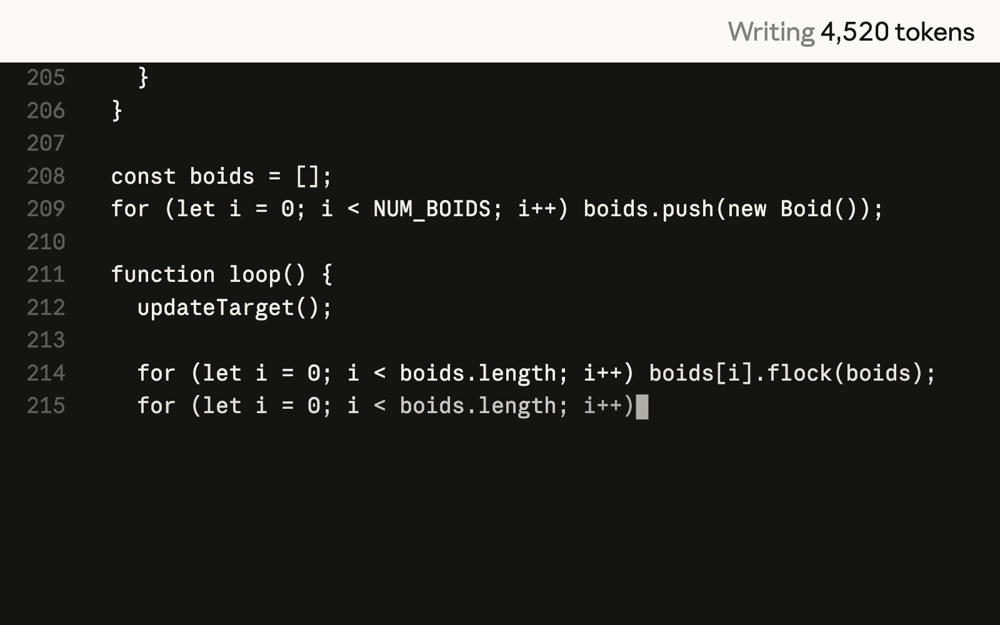
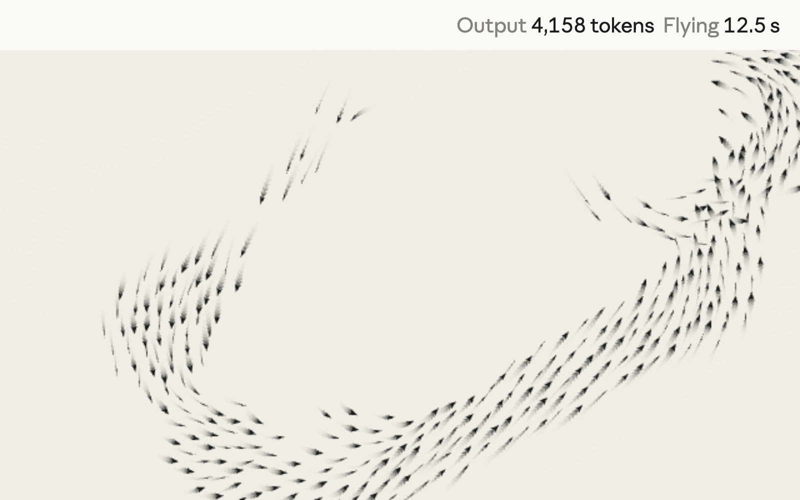
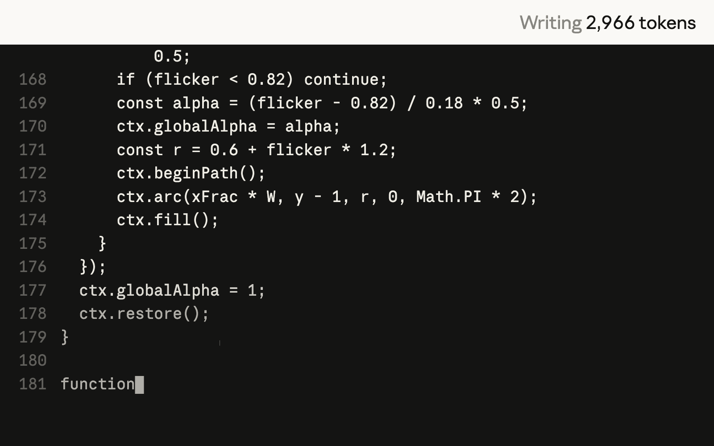
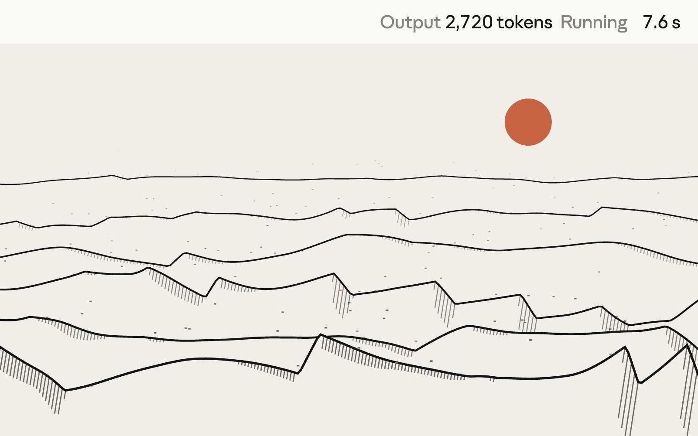
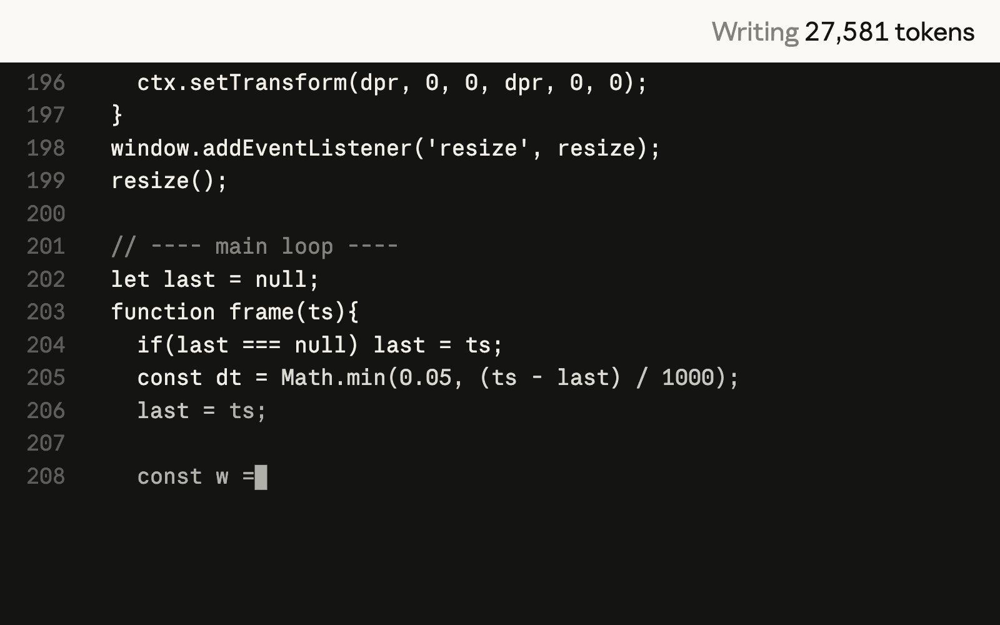
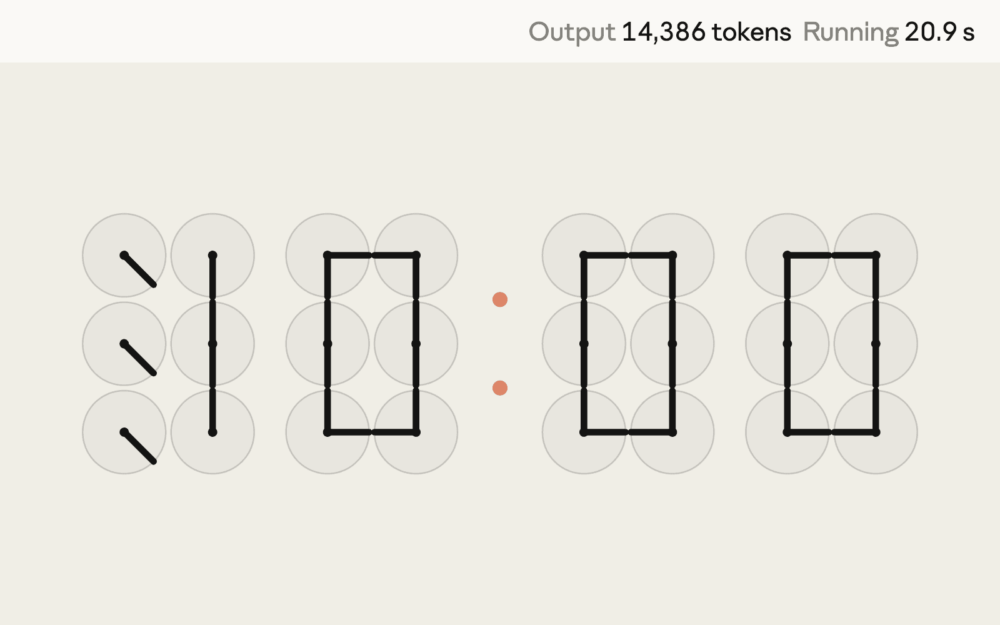

Introducing Claude Sonnet 5.5, the second model in the Claude 5.5 family. It’s a clear upgrade over Claude Sonnet 5, runs 30%+ faster, and costs up to 30% less for most work.
Sonnet 5.5 is a faster, lower-cost complement to Claude Opus 5.5. Where Opus 5.5 is built for complex work requiring careful judgment, Sonnet 5.5 is strongest at well-scoped everyday tasks, fixing bugs, and creating polished documents, slides, and spreadsheets. It’s also got a sharp eye for design. Claude Haiku 5.5, built for high-volume and cost-sensitive applications, will join the Claude 5.5 family in the coming weeks.
Sonnet 5.5 improves over Sonnet 5 on:
Performance. Sonnet 5.5 scores 70.6% on Terminal-Bench 4.0, an agentic coding evaluation, compared to Sonnet 5’s 10.3%. It scores two points below Opus 5.5 on GDPval-AA, a test of real-world work across a variety of occupations. And it’s strong on long-horizon work and image understanding—it’s the first Sonnet model to beat Pokémon Red working only from screenshots.
Collaboration. Like Opus 5.5, Sonnet 5.5 writes more clearly than our previous generation of models; early testers described it as a better partner for collaboration than Sonnet 5. Its speed also makes it well suited to fast iteration on less complex tasks.
Cost. Sonnet 5.5 is priced the same as Sonnet 5 at $2 per million input tokens, $10 per million output tokens, and $0.20 per million tokens for cache reads, but it typically needs far fewer tokens to do the same work. In our testing, it costs up to 30% less per task than its predecessor.
Speed. Sonnet 5.5 generates outputs 30%+ faster than Sonnet 5, making it our fastest Sonnet model to date.
Alignment and safety. On our automated behavioral audit, Sonnet 5.5 improves on or matches Sonnet 5 on most measures of alignment. Because its cybersecurity capabilities are comparable to Opus 5’s, it’s the first Sonnet model to launch with cyber safeguards and fallbacks like those we’ve developed for our most capable models. Its biology safeguards are the same as Sonnet 5’s. Both safeguards target a narrow set of high-risk requests; routine software development and most life sciences work are unaffected.
Performance
Sonnet 5.5 improves on Sonnet 5 across domains—in some cases dramatically. On several evaluations, Sonnet 5.5 at Max effort even performs comparably to Opus 5.5. However, benchmark scores capture only one facet of a model’s capabilities; in our own testing, and in that of external testers, Opus 5.5 remains clearly stronger at complex, open-ended work requiring sustained judgment.
| Sonnet 5.5 | Sonnet 5 | Opus 5.5 | GPT-6 Sol | |
|---|---|---|---|---|
| Agentic codingTerminal-Bench 4.0 | 70.6% | 10.3% | 66.4%¹ | — |
| Agentic codingFrontierCode 1.1 (Main) | 46.2%Max² | 42.4% | 54.4% | 49.3% |
| 52.1%Xhigh | ||||
| Agentic codingCursorBench 4.0 | 55.5% | 34.1% | 57.8% | — |
| Knowledge workGDPval-AA v2.1³ | 1844 | 1449 | 1846 | 1487⁴ |
| Knowledge workAA-Briefcase v1.1³ | 1811 | 1359 | 1822 | 1483⁴ |
| Multidisciplinary reasoningHumanity’s Last Exam | 64.5%with tools | 54.9%with tools | 67.7%with tools | — |
| Computer useOSWorld 2.1 | 80.1%partial | 57.0%partial | 81.8%partial | — |
| Visual chart recognitionChartography | 61.6%no tools | 15.6%no tools | 64.4%no tools | 53.6%⁴no tools |
For details on how we run our evaluations, see the Sonnet 5.5 System Card.
The charts below plot each model’s score against its cost per task at every effort level. As effort goes up, models typically work for longer, leading to a higher cost per task but generally also a higher score. The closer a point is to the top left of the chart, the more capability it delivers per dollar.
On several benchmarks, Sonnet 5.5 at Low or Medium effort beats Sonnet 5’s best score for about a tenth of the cost per task. It complements Opus 5.5 best when running at lower effort settings, where it costs less per task. At higher settings, it can perform comparably at a similar cost.
Terminal-Bench 4.0 measures how well a model can complete complex, multi-step professional tasks within a command-line interface. At Medium effort, the default in the Claude apps, Sonnet 5.5 far exceeds Sonnet 5’s best score for less than a tenth of the cost per task.
Terminal-Bench and OpenAI did not report GPT-6 Sol performance publicly, so we report GPT-5.6 Sol here.
FrontierCode measures whether an agent’s code changes would be merged. At High effort, the default on the Claude Platform, Sonnet 5.5 matches GPT-6 Sol’s best score for about a fifth of the cost per task.²
CursorBench evaluates coding agents on ambiguous, multi-file tasks taken from real Cursor sessions. Sonnet 5.5 at Low effort exceeds Sonnet 5’s best score for less than a tenth of the cost per task.
CursorBench 4.0 does not report GPT-6 Sol performance publicly, so we report GPT-5.6 Sol here.
On AA-Briefcase, a new benchmark of long-horizon knowledge work, Sonnet 5.5 at Medium effort bests Sonnet 5’s best score for about one ninth of the cost per task.³
Coding
Sonnet 5.5’s jump in performance is particularly noticeable in coding. At High effort on FrontierCode, it scores 10 points higher than Sonnet 5 at the same setting, at about one fifteenth of the cost per task. On CursorBench, which tests models on tasks from real Cursor coding sessions, its best score is within about two points of Opus 5.5.
Early testers appreciated how quickly Sonnet 5.5 can understand a codebase. They were also struck by its efficiency: in head-to-head runs, it batched tool calls together more than Sonnet 5, leading to fewer steps and lower costs.
“In Epic’s early testing, Claude Sonnet 5.5 cleared the same quality bar you’d expect from a higher-tier model, holding up on a system design audit and a data flow review. The new model managed tens of thousands of lines of code for gameplay system architecture, kept responses snappy, handled multi-hour tasks, and delivered with less prescriptive prompting.”
Knowledge work
Sonnet 5.5 shows gains in multiple areas of knowledge work. On GDPval-AA, which tests models on real-world tasks across 44 occupations and nine major industries, Sonnet 5.5 scores nearly level with Opus 5.5 and about 400 points above Sonnet 5. It’s close to Opus 5.5 in computer use and chart recognition, and clearly outperforms Sonnet 5 and GPT-6 Sol on long-horizon knowledge work.
Early testers highlighted less quantifiable improvements. They found it to be a more natural conversational partner and remarked on its knack for design, noting that it adds polish to user interfaces and can follow slide templates to create decks that require minimal editing. In one internal test, we gave it a public company’s quarterly earnings materials and call transcripts, along with a slide template, and asked for a 10-slide operating review. Two experts judged its first draft to be ready to send as is.
“Without changing any of our prompts, Claude Sonnet 5.5 did better than Sonnet 5 on almost all of our offline Slackbot evals, in fewer steps and with about 14% fewer output tokens. When someone gives Slackbot a task, quality and speed are what matter most, and Sonnet 5.5 allows Slackbot to deliver better outcomes for users, faster.”
Cost and speed
Pricing
| Price per 1M tokens | Claude Sonnet 5.5 | Claude Opus 5.5 |
|---|---|---|
| Cache reads | $0.20 | $0.20 |
| Cache writes | $2.50 | $5 |
| Input tokens | $2 | $4 |
| Output tokens | $10 | $20 |
Sonnet 5.5 requires fewer tokens per task than Sonnet 5, so it’s less expensive to run. It also generates output 30%+ faster, and its efficiency is immediately noticeable:
A murmuration of 400 starlings in one HTML file


Wind shaping sand dunes in one HTML file


A clock made of 24 small clocks in one HTML file


Adjusting the effort level lets you balance cost and speed against overall quality. In Claude Code and our apps, the default effort is set to Medium, while the Claude Platform defaults to High. At lower settings, Claude answers faster and uses fewer tokens, which suits routine work. At higher settings, Claude reasons for longer and checks its work more thoroughly.
Safety
Alignment
Sonnet 5.5 doesn’t advance the frontier of our models’ capabilities, so our alignment assessment focused on a targeted set of risks that apply to models of any capability level, including acting against users’ interests, misleading users, and cooperating with high-stakes misuse.
On our automated behavioral audit, which tests Claude across roughly 1,850 scenarios, Sonnet 5.5 improves on or matches Sonnet 5 on most measures of alignment, resistance to misuse, and honesty. On our newer containment evaluations, Sonnet 5.5 comes close to Opus 5.5, the best model we tested, in how rarely it tries to escape its sandbox, and it’s the least likely of any of our models to probe the limits of its containers. Across the full audit, Opus 5.5 still performs slightly better overall, but we found no evidence that Sonnet 5.5 pursues goals that conflict with the user’s intention.
As we described in our recent alignment assessment, no set of evaluations reliably catches every failure, and Sonnet 5.5 may have tendencies we haven’t found, which is why we pair our own alignment work with the safeguards described below.
Safeguards
Cybersecurity. Sonnet 5.5’s cyber capabilities are a large improvement over Sonnet 5’s, so we’re deploying it with safeguards similar to those on Opus 5.5. Users can still find and fix bugs in their code as part of routine software development, but higher-risk cybersecurity tasks will visibly fall back to Sonnet 5. Soon, cyberdefenders will be able to apply to our expanded Cyber Verification Program for tiered access to more advanced capabilities on Sonnet 5.5, Opus 5.5, and Claude Mythos models.
Biology. Sonnet 5.5 uses the same set of biology safeguards as Sonnet 5. These target harmful requests; most research, education, and clinical work is unaffected, though some microbiology and virology requests may be flagged in error. Organizations can apply to our Life Sciences Verification Program for access to safeguards designed for the full breadth of biology-related work.
Distillation. Distillation attacks, in which attackers use thousands of fake accounts to extract a model’s capabilities at industrial scale, allow bad actors to create highly capable models without the safeguards we build into Claude. Because Sonnet 5.5 is far more capable than its predecessor, it’s the first Sonnet model to launch with safety classifiers that prevent reasoning extraction. Sonnet 5.5 also expands preserved thinking, so Claude’s thinking cannot be decoupled from the account that created it. Most developers won’t notice a change. If you move conversations between accounts, including switching accounts mid-session in Claude Code, our docs article explains the change.
Getting started
As with Opus 5.5 and Sonnet 5, Claude Sonnet 5.5 is available with zero data retention.
Claude Sonnet 5.5 is now available on all platforms, including Amazon Web Services, Google Cloud, and Microsoft Azure. Developers can get started on the Claude Platform with claude-sonnet-5-5. If you run Sonnet with thinking off, you’ll need to switch to the new between_tools setting, which keeps up-front thinking off, before moving to Sonnet 5.5. See our migration guide for details.
Footnotes
1 Terminal-Bench 4.0 results are reported for Claude Opus 5.5 at Xhigh effort which represents the model’s highest score.
2 Sonnet 5.5 scores lower at Max effort than at Xhigh. FrontierCode evaluates whether a code change could be merged without human edits. It penalizes out-of-scope changes, even if they are high-quality or helpful. At Max effort, Sonnet 5.5 more often ran Claude Code’s code-review skill, which splits the review across many subagents, and in two cases Cognition examined, this led to a timeout or to extra edits beyond the task’s scope, and therefore to a lower score.
3 Artificial Analysis ran GDPval-AA and AA-Briefcase on a pre-release deployment of Sonnet 5.5 on the Claude Platform, which we found to have a bug that could degrade responses to requests that use structured outputs. We expect the effect on Sonnet 5.5’s scores, if any, to be small and to understate its performance. That bug has since been fixed.
4 OpenAI recently fixed a bug that degraded image understanding in GPT-6 Sol. Official AA-Briefcase v1.1 and GDPval-AA v2.1 scores from Artificial Analysis, and Chartography scores from Surge AI, may not have been updated yet to reflect the latest version of the model. Artificial Analysis does not expect major impacts to AA-Briefcase v1.1 and GDPval-AA v2.1. Internal testing of Chartography suggests its score was not impacted.